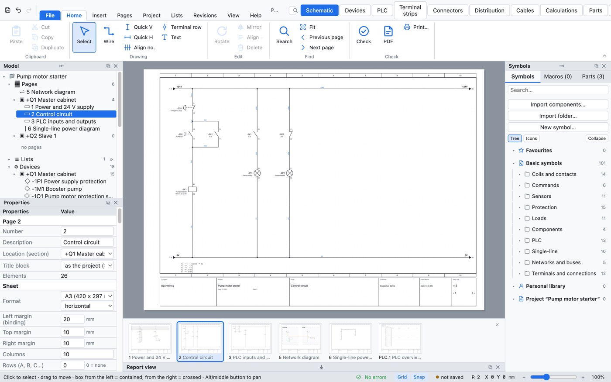

Open source · GPL · macOS, Windows
OpenWiring
CAD elettrico per schemi multifilari e quadri: dal disegno escono da sole morsettiere, cavi, liste e pagine PLC.
- Rimandi automatici tra bobine e contatti
- Morsettiere, cavi e piani di cablaggio
- Schede PLC con export per TIA, TwinCAT e CODESYS
- Interfaccia in 6 lingue
